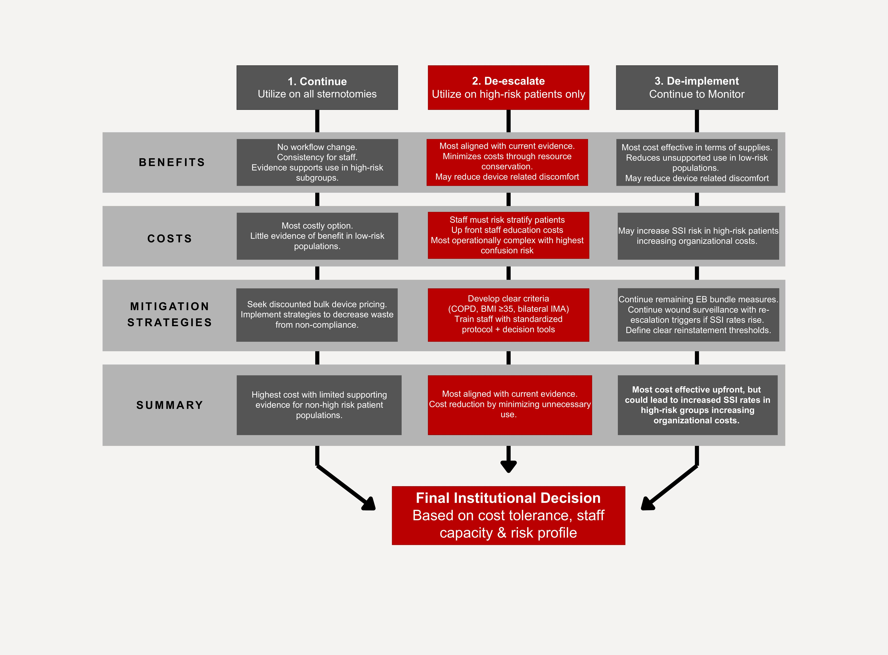

Based on a critical appraisal of 16 included studies, the following three recommendations are presented for institutional decision-making. Each option is evaluated across benefits, costs, mitigation strategies, and a logic summary. The final decision should reflect institutional cost tolerance, staff capacity, and patient risk profile.
Practice Recommendation Logic Flow

Figure 1. Practice recommendation logic flow comparing three evidence-informed options for the institutional use of the Posthorax external sternal support vest following median sternotomy.